INZ RUNNER · PHIÊN BẢN 1.0.0
Điền đơn Working Holiday đúng như các ảnh trong tài liệu này, rồi bấm chạy khi quốc gia trên trang Immigration New Zealand đang mở.
INZ Runner mở Google Chrome, đăng nhập tài khoản Immigration New Zealand, điền đơn Working Holiday theo hồ sơ đã lưu, rồi bấm tiếp cho đến trang thanh toán.
Mỗi tài khoản là một cửa sổ Chrome riêng.
| Thứ cần có | Ghi chú |
|---|---|
| Mac Apple Silicon hoặc Windows 10/11 64-bit | File Mac là một file DMG. File Windows là một file cài. |
| Google Chrome | Cài bản mặc định. App mở đúng Chrome trên máy. |
| Tài khoản Immigration | Đã tạo và đã xác nhận email. Cần tên đăng nhập, mật khẩu và email nhận tin visa. |
| Hộ chiếu | Còn hạn trên 6 tháng tính từ ngày nộp. Số hộ chiếu gõ đúng từng ký tự. |
| Giấy tờ thứ hai | Ảnh mẫu dùng căn cước. Cần ngày cấp và ngày hết hạn. |
| Thẻ Visa hoặc Mastercard | Bạn tự nhập lúc thanh toán. App dừng trước bước đó. |
| Username được phép chạy | Nếu whitelist trên sheet đang bật, username phải có trong danh sách. Thiếu thì Chrome không mở. |
Vào https://www.google.com/chrome/, tải Chrome cho đúng hệ điều hành, cài vào chỗ mặc định, mở Chrome một lần rồi đóng.
Nếu app báo không thấy Google Chrome, cài lại Chrome rồi mở app lại.
File này chạy trên Mac chip Apple (M1 trở đi). Dữ liệu bạn nhập nằm trong thư mục Application Support của app, không nằm trong file DMG.
Dữ liệu trên Windows nằm ở C:\Users\<tên bạn>\AppData\Roaming\inz-puppeteer-multi-tab. Gỡ app không tự xóa thư mục này.
Thanh tab trên ảnh là Run, Runner log, Applicant data, Settings. Làm theo thứ tự: điền Applicant data, rồi Settings, rồi Run.
| Trên ảnh | Dùng để |
|---|---|
| Run | Start runner, Stop app, Resume, Cancel. Xem từng tài khoản đang ở đâu. |
| Runner log | Đọc log lần đang chạy và các lần trước. |
| Applicant data | Điền đơn. Giữ Form mode. Bấm Save data. |
| Settings | Scheme country, whitelist, captcha và Telegram. Bấm Save settings. |
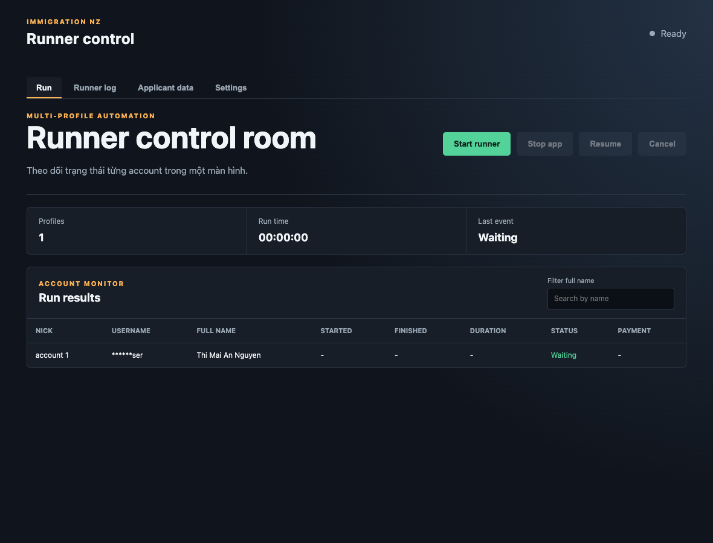
Góc Applicant data trên ảnh còn có JSON mode và dòng 1 account ready. Dòng đó phải hiện trước khi bấm Start runner.
Vào Applicant data. Giữ Form mode đang sáng. Điền xong cả đơn rồi bấm Save data. Chữ đỏ là lỗi đúng câu app đang báo. Sửa ô đó rồi lưu lại.
| Ô trên ảnh | Giá trị trong ảnh |
|---|---|
| Bạn có người đại diện là cố vấn di trú không? | No (Không) |
| Họ / Tên 1 | Nguyen / Thi Mai An |
| Tên 2, Tên 3, Tên khác | Để trống |
| Danh xưng / Giới tính | Miss (Cô) / Female (Nữ) |
| Ngày sinh / Nước sinh | 24 May, 1996 / Vietnam |
| Số nhà / Tên đường | 12 / Le Loi |
| Phường / khu vực | Quan 1 |
| Thành phố / Tỉnh / Mã bưu chính / Quốc gia | Ho Chi Minh / Ho Chi Minh / 700000 / Vietnam |
| Điện thoại ban ngày, ban đêm, số di động | 0901234567 |
| Email / Cách liên hệ | visa.demo@example.com / Email |
| Bạn có thẻ tín dụng để nộp phí trực tuyến không? | Yes (Có) |
| Số hộ chiếu, gõ hai lần | C1234567 |
| Ngày hết hạn hộ chiếu / Quốc tịch | 8 September, 2033 / Vietnam |
| Giấy tờ thứ hai | National ID (Căn cước công dân), cấp 26 September, 2024, hết hạn 26 September, 2034 |
| Ngành nghề / Nghề nghiệp | Banking / Bank officer |
| Quốc gia chương trình | VIETNAM |
| Ngày dự định đến | 24 December, 2026 |
| Tên chủ thẻ | Thi Mai An Nguyen |
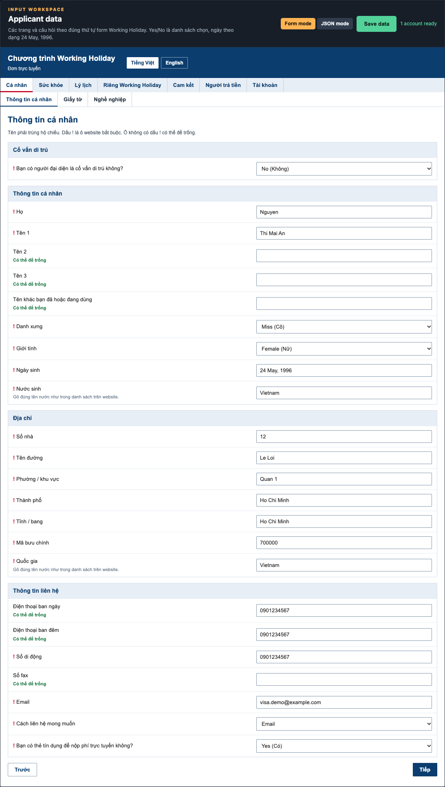
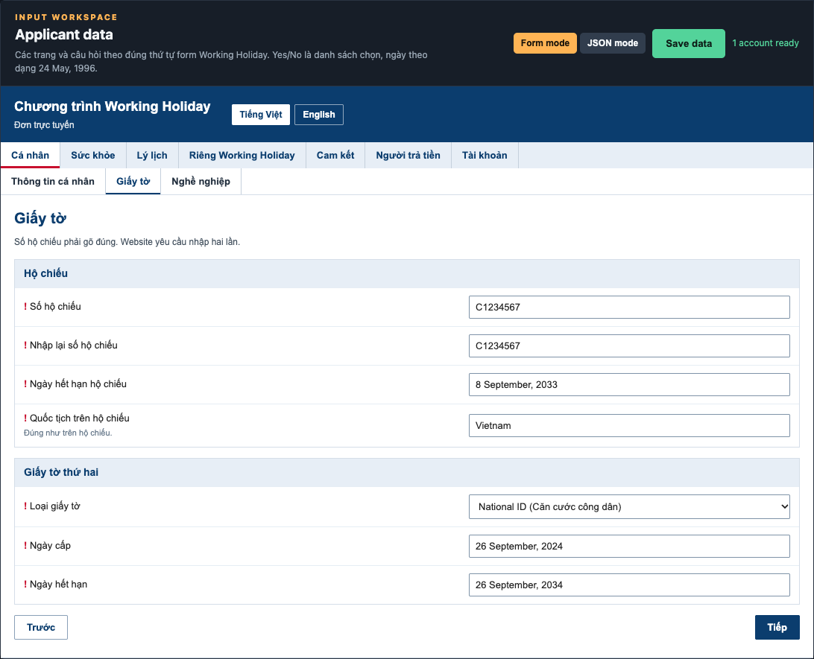
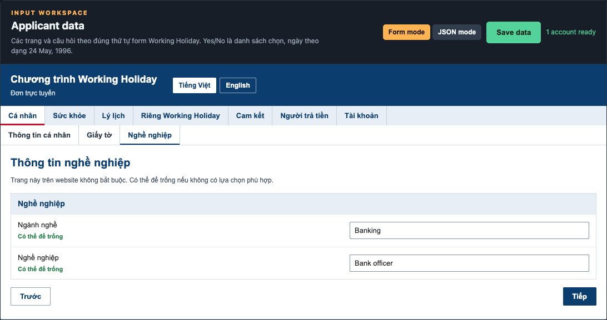
Trang này trên website không bắt buộc. Ảnh mẫu điền Banking và Bank officer. Không có lựa chọn phù hợp thì để trống cả hai ô. App vẫn bấm Tiếp và đi sang trang sau.
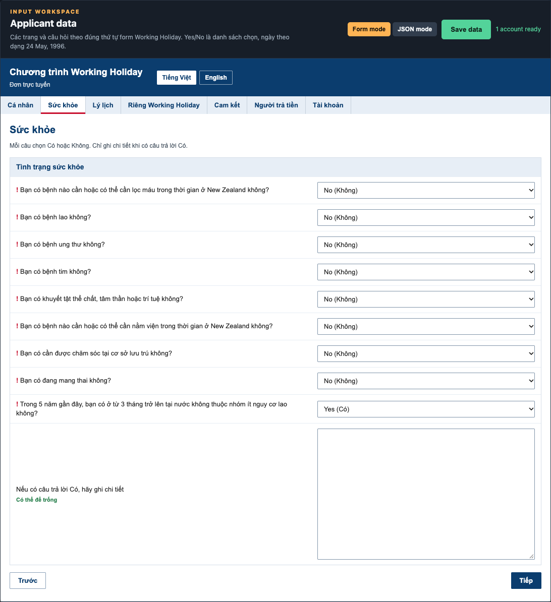
Với người không có bệnh nêu trong đơn, chọn No (Không) cho các câu lọc máu, lao, ung thư, tim, khuyết tật, nằm viện, chăm sóc tại cơ sở lưu trú và mang thai.
Có bệnh thật thì phải chọn Có đúng câu đó và ghi vào khung chi tiết. Khai Không trong khi có bệnh là khai sai.
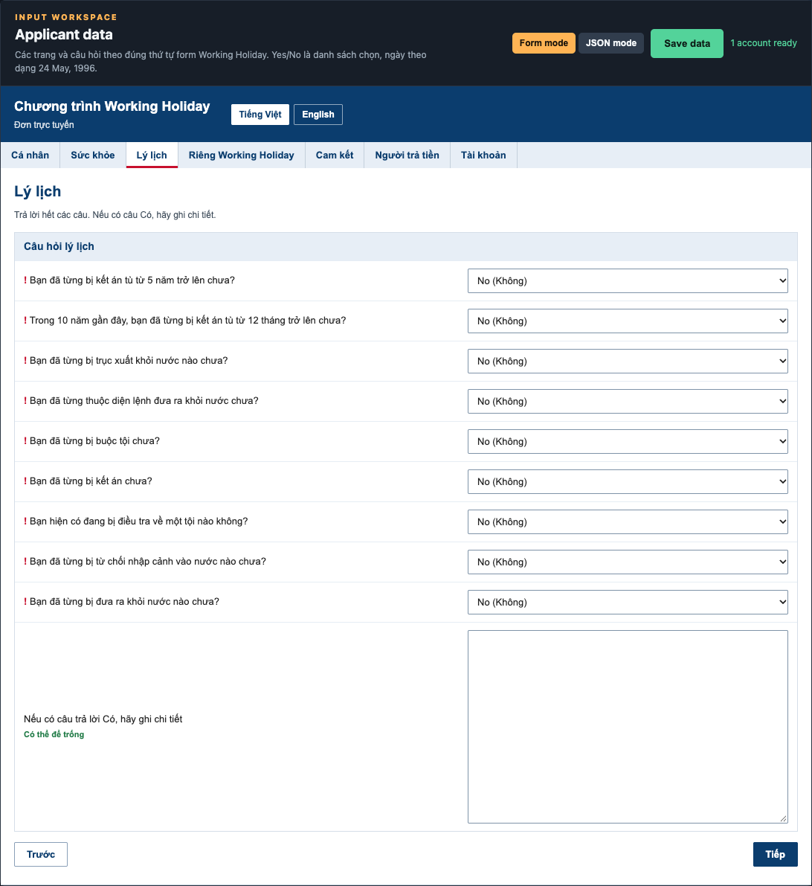
Chưa từng phạm tội, ngồi tù, bị trục xuất, bị buộc tội, đang bị điều tra hoặc bị từ chối nhập cảnh thì chọn No (Không) hết, như ảnh. Từng có thì chọn Yes (Có) đúng câu đó và ghi ngày cùng quốc gia vào khung chi tiết.
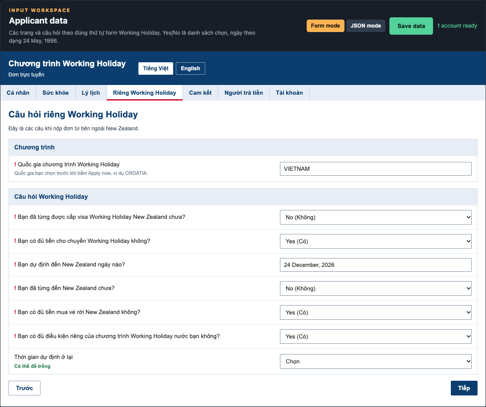
Ô Quốc gia chương trình Working Holiday phải giống ô Scheme country ở Settings. Trên ảnh cả hai đều là VIETNAM. Khác chữ thì app không chạy. Gõ đúng chữ trên thẻ quốc gia bạn sẽ bấm Apply now.
| Câu trên ảnh | Ảnh đang chọn |
|---|---|
| Đã từng được cấp visa Working Holiday New Zealand chưa | No (Không) |
| Có đủ tiền cho chuyến không | Yes (Có). Chỉ chọn Có khi bạn đủ mức của đúng chương trình đang nộp. |
| Bạn dự định đến New Zealand ngày nào? | 24 December, 2026 |
| Đã từng đến New Zealand chưa | No (Không). Chọn Yes thì điền thêm ngày ở ô hiện ra. |
| Đủ tiền mua vé rời New Zealand | Yes (Có) |
| Đủ điều kiện riêng của chương trình nước bạn | Yes (Có) |
| Thời gian dự định ở lại | Để Chọn nếu trang không hỏi. Có hỏi thì chọn 6 months hoặc 12 months. |
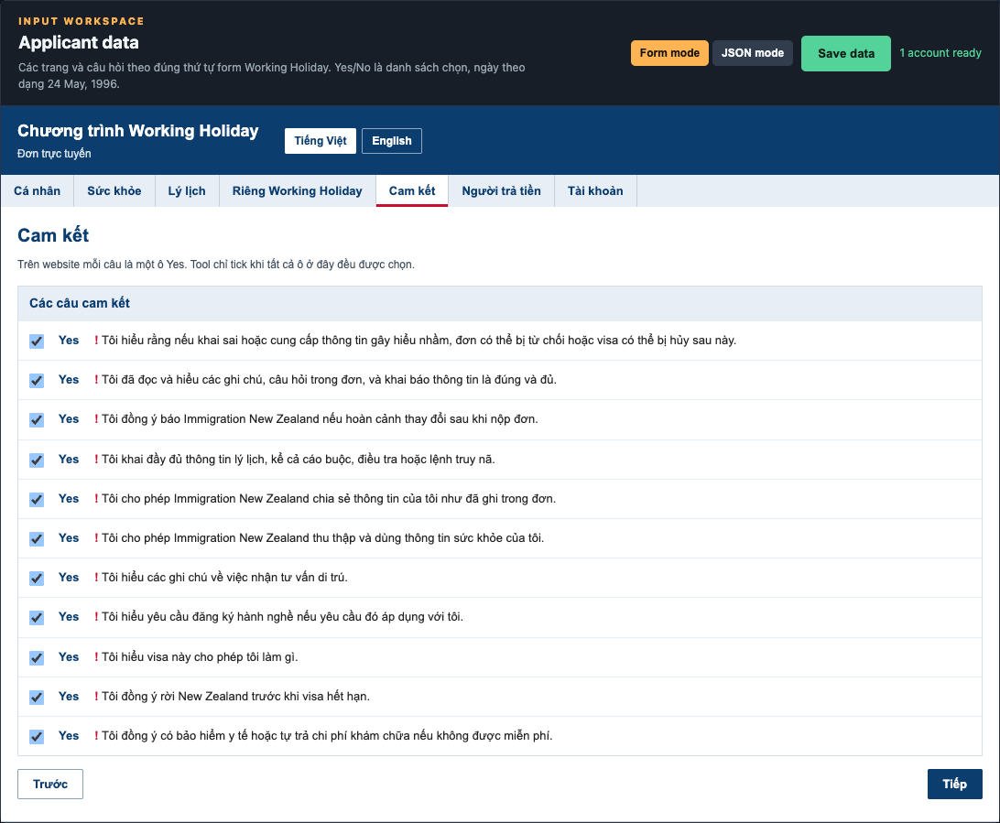
Tick hết 11 câu trên ảnh. Thiếu một ô thì không lưu được. Runner chỉ tick các ô trên website khi tất cả đều được chọn.
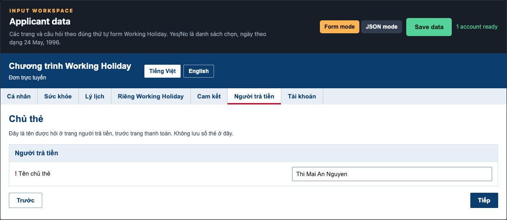
Điền tên người trả phí, viết như trên thẻ. Bấm Save data. Góc phải phải hiện 1 account ready thì mới chạy được. Chưa có tài khoản thì sang bước sau.
Trên ảnh, tài khoản nằm trong Applicant data, tab Tài khoản.
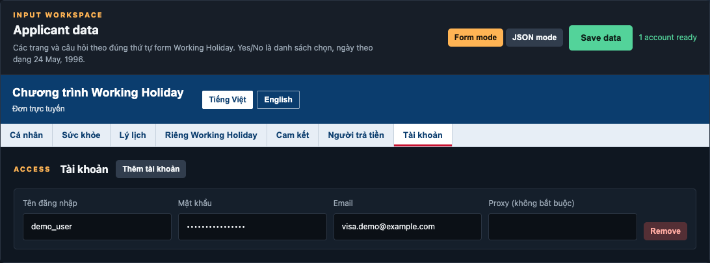
Nhiều tài khoản thì bấm Thêm tài khoản nhiều lần. Mỗi dòng là một Chrome.
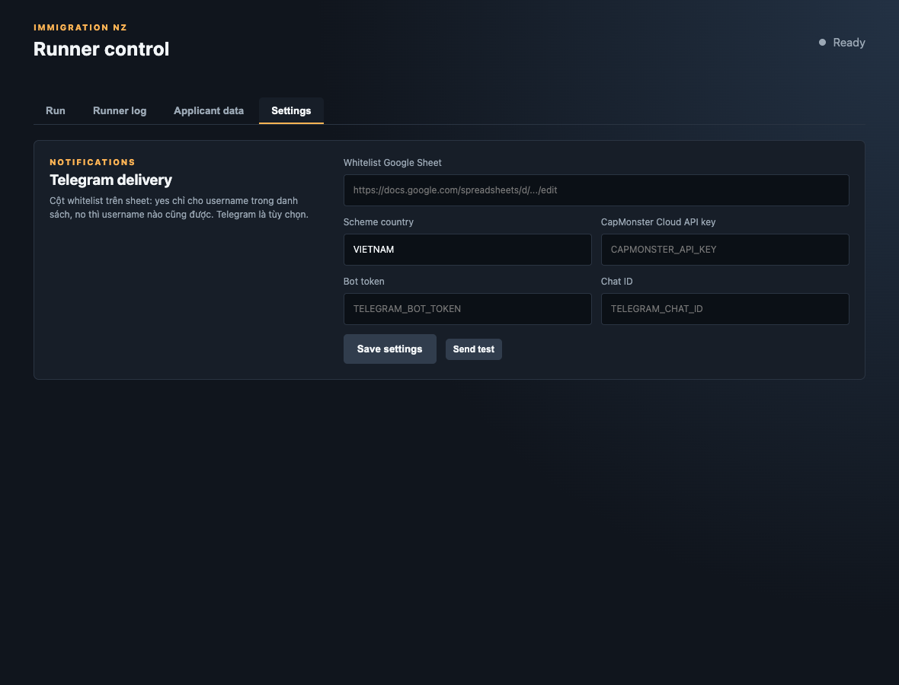
Gõ cùng chữ với ô quốc gia trong đơn. Ảnh ghi VIETNAM. App so sánh không phân biệt hoa thường. Runner chỉ bấm Apply now khi thẻ đó hiện OPEN. Thẻ đang CLOSED thì app tải lại danh sách và chờ. Stop app hoặc Cancel thì ngừng chờ.
Bấm Save settings sau khi sửa quốc gia.
Ô Whitelist Google Sheet hiện link sheet. Cột whitelist trên sheet quyết định ai được chạy:
Ba ô CapMonster Cloud API key, Bot token và Chat ID trên ảnh đang để chữ gợi ý. Giá trị dùng khi chạy lấy từ whitelist sheet. Sheet thiếu API key, bot token hoặc chat ID thì lần chạy dừng.
Nút Send test gửi một tin thử vào nhóm Telegram. Bấm nút này trước giờ mở đơn. Khi một tài khoản chạy xong hoặc lỗi, app gửi một tin riêng cho tài khoản đó, có trạng thái và link thanh toán nếu đã có.
Quay lại tab Run. Dòng 1 account ready phải đang hiện, và hai ô quốc gia phải cùng một chữ. Bấm Start runner.
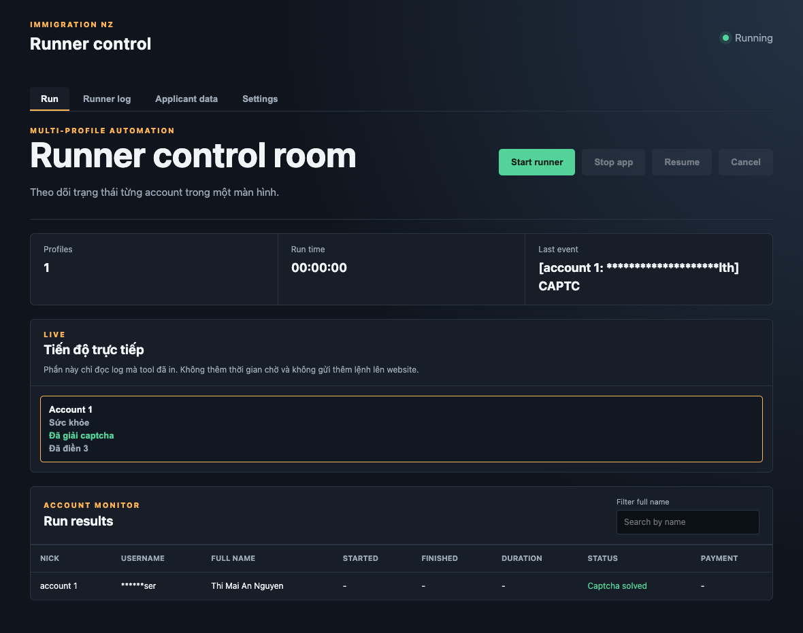
| Nút trên ảnh | Việc nút làm |
|---|---|
| Start runner | Mở Chrome và chạy các tài khoản. |
| Stop app | Dừng account đang chạy, kể cả lúc đang tải lại trang hoặc đang giải captcha. Chrome giữ nguyên trang. |
| Resume | Chạy tiếp từ chỗ đã dừng. |
| Cancel | Đóng Chrome của lần chạy. Đơn đã lưu vẫn còn. |
Sang Applicant data trong lúc chạy: trang đã qua có chấm xanh, trang đang mở có chấm vàng. Ô đã điền nền xanh và chữ Đã điền.
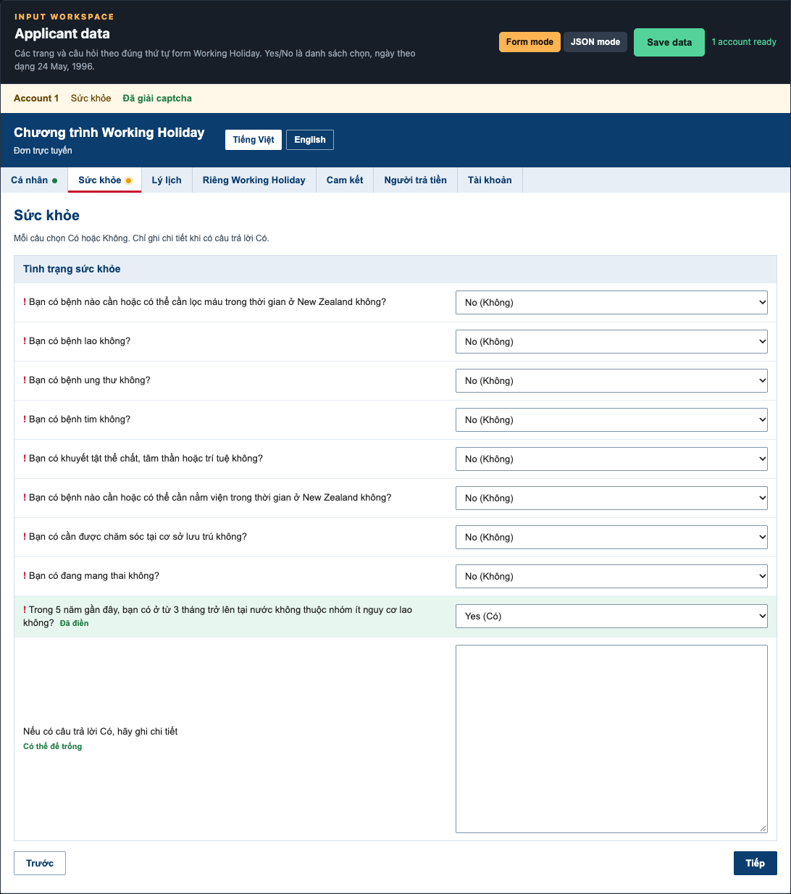
Khi đơn đã đi tới trang cuối mà scheme hết chỗ, trang có câu no longer a place available for you.
App tải lại đúng trang đó. App không quay về danh sách quốc gia để chờ mở lại. Mỗi lần tải lại không bị cắt giữa chừng. Tải lại xong, nếu trang có nút Submit, app bấm Submit. Câu hết chỗ vẫn còn thì app tải lại tiếp, chưa bấm.
Việc chờ thẻ OPEN chỉ xảy ra khi app đang đứng ở danh sách quốc gia và thẻ đó còn CLOSED.
Khi điền xong, app bấm Pay now, ghi tên chủ thẻ, mở trang thanh toán, lưu link, rồi đóng Chrome. App không nhập số thẻ.
Trên tab Run, dòng của tài khoản có chỗ mở link thanh toán. Bấm chỗ đó, tự điền số thẻ, ngày hết hạn và mã bảo mật. Số tiền là số đang hiện trên trang thanh toán.
| Bạn thấy | Làm gì |
|---|---|
| Mac chặn lúc mở app | Nhấp phải INZ Runner, chọn Open, rồi Open lần nữa. |
| SmartScreen màu xanh lúc mở file cài Windows | Bấm More info, rồi Run anyway. |
| Không thấy Google Chrome | Cài Chrome vào chỗ mặc định, mở một lần, mở lại app. |
| Không có trong whitelist | Username chưa được phép. Nhờ người giữ sheet thêm đúng tên đăng nhập. |
| Thiếu API key, bot token hoặc chat ID | Sheet whitelist thiếu ô. App không chạy khi thiếu một trong ba giá trị này. |
| Quốc gia không khớp | Sửa ô trong đơn và ô Scheme country cho cùng một chữ, như VIETNAM trên ảnh, rồi Save. |
| Hai ô số hộ chiếu khác nhau | Gõ lại cho giống nhau, như C1234567 và C1234567 trên ảnh. |
| Ngày sai dạng | Viết như 8 September, 2033 hoặc 24 May, 1996. |
| Thiếu thông tin bắt buộc | Điền ô có dấu !. Rồi bấm Save data. |
| Thẻ quốc gia mãi CLOSED | App vẫn đang chờ ở danh sách. Stop app nếu bạn chưa muốn chờ. |
| Trang cuối báo hết chỗ | Để app tải lại trang đó. Có nút Submit thì app tự bấm. |
| Đứng ở danh sách hồ sơ cũ | App không bấm Edit, Submit, Delete. Tự xem trên Chrome đang mở. |
| Send test lỗi | Bot token hoặc chat ID trên sheet sai, hoặc máy không ra mạng. |